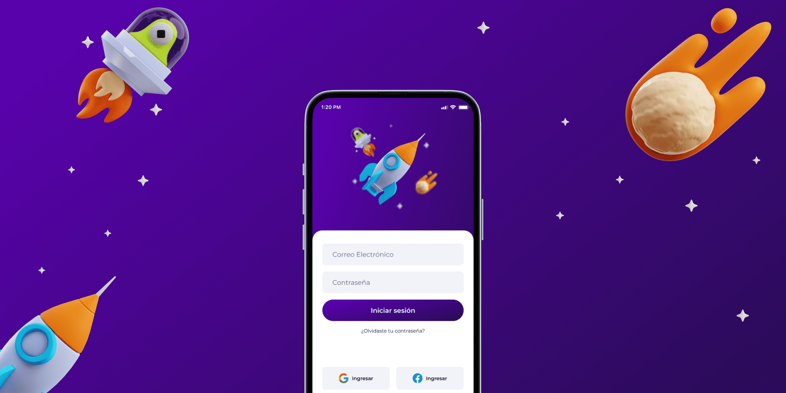
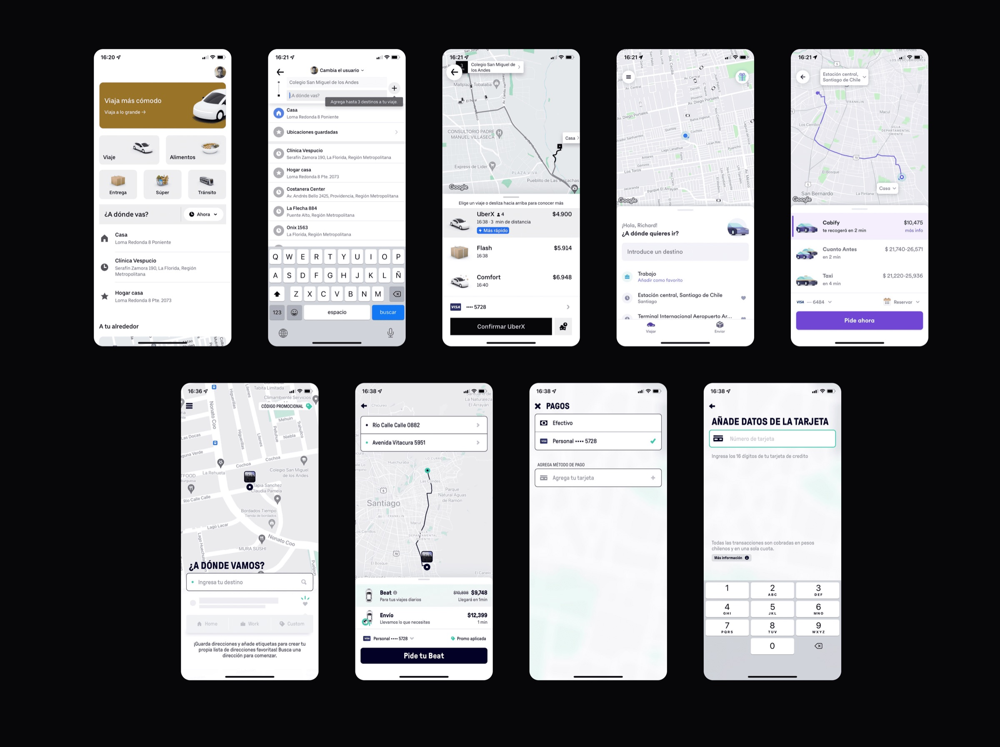
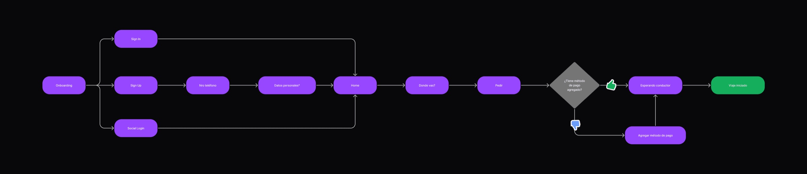
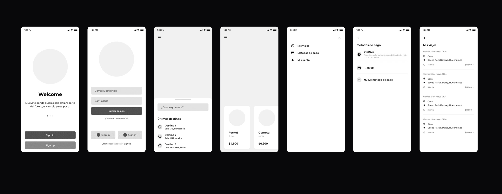
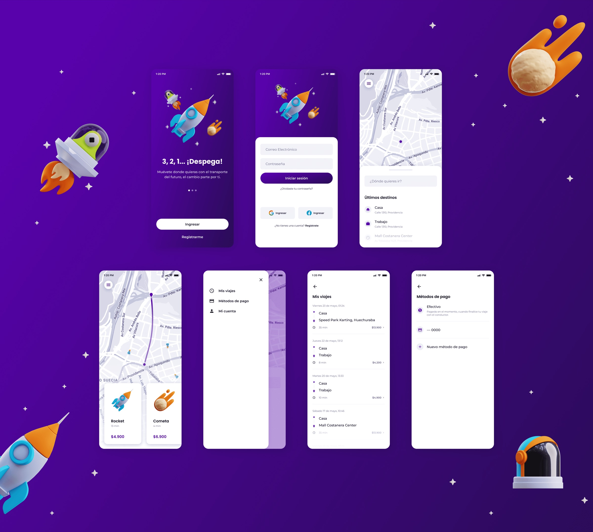

Booking a rocket should feel familiar.
A concept for a future mobility app that connects passengers with sustainable rocket transportation—designed around a short, recognizable booking flow.

In Rocketaxi’s imagined world, streets belong to people while the sky carries clean, renewable transportation.
- Client
- Xepelin challenge
- Role
- Product Designer
- Platform
- Mobile app
- Focus
- Mobility booking
01 · Framing
Recognizing what the brief could not answer
The challenge provided limited information about users and their context. In a real product process, research would be needed to define the personas, motivations, pain points, business conditions, and MVP scope.
For this exercise, I made those gaps explicit and focused the design on a narrow goal: make requesting a rocket clear, fast, and easy to understand.
02 · Benchmark
Building on learned mobility patterns
I reviewed Uber, Cabify, and Beat to understand how established products support vehicle requests. Their core flows were similar: once a user and payment method are set up, transportation can be requested in a few clear steps.
Preserving that familiar mental model reduced the amount of new behavior Rocketaxi would ask people to learn.

03 · Flow
A short path to a rocket
The user flow centered on a direct happy path and a lightweight sign-up experience, including social login. The objective was to meet patterns people already understood from current mobility apps.

04 · Structure
Putting the request first
The wireframes established a hierarchy centered on booking a rocket, while keeping the information required to make a confident decision close at hand.

05 · Interface
Modern, direct, and focused
The high-fidelity concept uses a minimal interface focused on the primary action. Secondary information such as trip history, payment methods, and account settings moves into the sidebar, preserving a cleaner and more purposeful home screen.
In a full product process, this proposal would move into user testing before further iteration.
